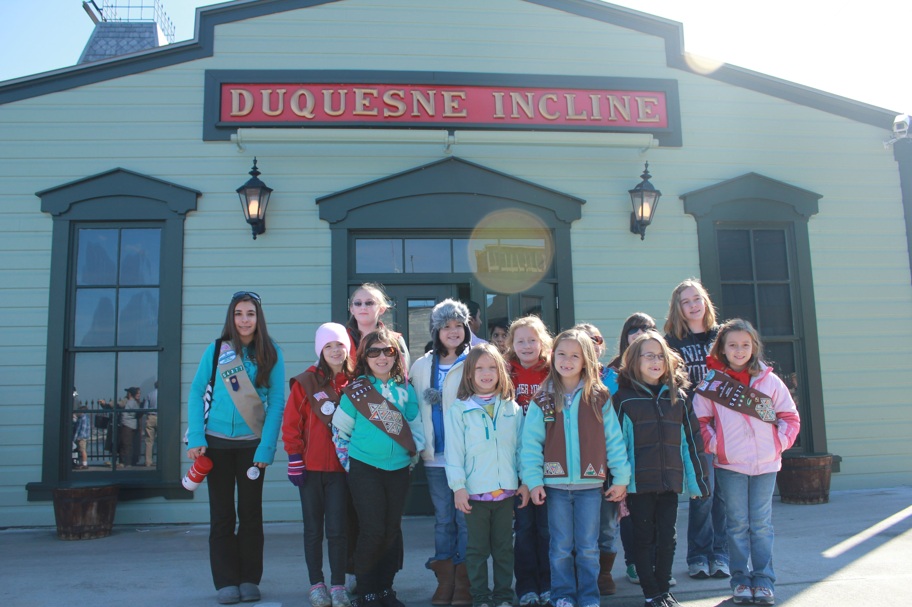

The original hoisting equipment including its famous wooden gear teeth can be viewed during our tour.
For groups of ten or more a free tour of The Duquesne Incline's historic upper station is available.
 |
Group Tour
- The program includes:
- • A pictorial history of Pittsburgh's industry, inclines, sports venues, and natural disasters.
- • A visit to the machine room to observe the original hoisting equipment from 1877 in operation.
- • A panoramic view of Downtown Pittsburgh from the observation deck 400 feet above the three rivers.
- • Also allow time for photos and a visit to our gift shop for post cards and souvenirs.
- Contact Tom Reinheimer at 412-381-1665 or E-mail
|
Field Trip
- A free field trip program is available for students and youth groups of ten or more daily – except Saturdays and Sundays after 12:00 noon due to weekend crowds and limited space.
- The program includes:
- • A teacher's lesson packet for students' specific grade level
- • A round trip ride on the Duquesne Incline
- • A history of inclines in Pittsburgh
- • A discussion about Pittsburgh's industrial past
- • A visit to the machine room to observe the original hoisting equipment in operation and learn about the engineers who built it
- • A panoramic view of Downtown Pittsburgh and The North Shore from our observation deck 400 feet above the three rivers
- • A brief history of the French and Indian War from which the city arose
|
 |
|  |
Patch Program
- Available daily – except Saturdays and Sundays after 12:00 noon due to weekend crowds and limited space.
- For $6.00 per scout, the program includes:
- • A round trip ride on the Duquesne Incline
- • A discussion about Pittsburgh's industrial past
- • A pictorial history of Pittsburgh's industrial past
- • A visit to the machine room to observe the original hoisting equipment from 1877 in operation
- • A panoramic view of Downtown Pittsburgh and The North Shore from our observation deck 400 feet above the three rivers
- • A colorful patch depicting The Duquesne Incline
- • A fun Incline quiz to take with you
|